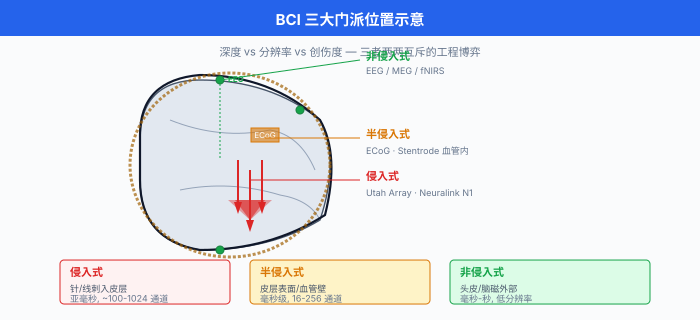
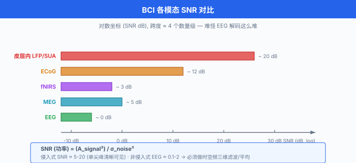
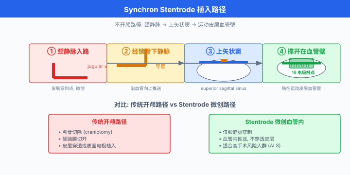
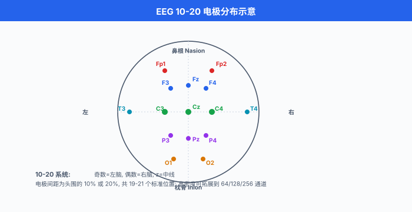
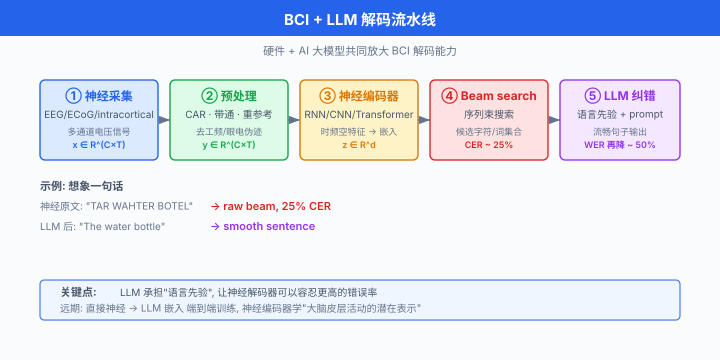

脑机接口¶
一句话总结：脑机接口 (Brain-Computer Interface, BCI) 在大脑与外部设备之间架一条"读心 + 写心"的高速公路，它一头扎进电极与神经信号的硬件世界，另一头连上深度学习与 LLM 解码器，正在把"用意念控物"从科幻推向病房。
🗺️ 本章导览¶
- 本章覆盖前沿 AI：量子 ML → 神经形态 → 太空数据中心 → 去中心化 AI → 脑机接口
- 01. 量子机器学习：量子比特、变分电路、量子优势之争
- 02. 神经形态计算：脉冲神经网络、类脑硬件、事件驱动
- 03. 太空数据中心: LEO 算力、辐射散热、月球 / 轨道机房
- 04. 去中心化 AI：联邦学习、隐私计算、P2P 推理
- 05. 脑机接口 (本节)：侵入式 / 半侵入式 / 非侵入式硬件，神经解码，与 AI 大模型的合流
这一节我们从一颗最普通的硅电极出发，一路爬到马斯克 (Elon Musk) 的 Neuralink、中国脑虎科技 (陶虎)、强脑科技 BrainCo (韩璧丞)、NeuroXess，再到 Meta 用脑磁图 (MEG) 默默拼写句子，看清 BCI 的硬件、解码算法与未来形态.
1. 什么是脑机接口¶
脑机接口 (Brain-Computer Interface, BCI) 的官方定义很干巴：绕过外周神经与肌肉，直接在大脑 (或中枢神经) 与外部设备之间建立通信通路的系统. 翻译成大白话：大脑想动手指，但手指断掉了，BCI 就替手指接上那根"线"，把神经电信号直接喂给假肢 / 光标 / 屏幕 / 语音合成器，让"想"变成"做".
按侵入程度，我们把 BCI 切成三大门派，这也是后面每一节的脊椎:
| 类型 | 电极位置 | 空间分辨率 | 时间分辨率 | 风险 / 创伤 |
|---|---|---|---|---|
| 侵入式 (Invasive) | 皮层内 / 脑深部 | 单神经元级 (\(\sim 10\,\mu\text{m}\)) | 亚毫秒 | 需开颅，长期植入有炎症反应 |
| 半侵入式 (Semi-Invasive) | 皮层表面 / 颅内血管 | 局部场电位 (\(\sim 1\text{ mm}\)) | 毫秒级 | 仍需手术，但比侵入式温和 |
| 非侵入式 (Non-Invasive) | 头皮 / 头皮外 | 厘米级 | 毫秒到秒 | 零手术，但信噪比低 |
为什么分辨率与侵入程度成反比？因为越靠近神经元的源头 (动作电位起源)，信噪比 (Signal-to-Noise Ratio, SNR) 越高，能"看清"单个神经元在不在放电；反之，隔着颅骨和头皮，我们只能看到几亿个神经元放电的平均，像在大礼堂外头听里面的人说话。
一句话总结本节:BCI 是一场"分辨率换创伤"的技术博弈，每跨过一档，都伴随着硬件、解码算法和应用场景的一次跃迁.
图说：我们推荐绘制一张三栏对比图，左侧放侵入式 (Utah Array 针尖扎进皮层)，中间放半侵入式 (Synchron Stentrode 撑在上矢状窦血管里)，右侧放非侵入式 (EEG 电极帽贴在头皮). 三个剪影叠在一颗侧视大脑轮廓上，让读者一眼看清"深度差".

2. 硬件第一课：电极、采样、信噪比¶
2.1 电极的几何与材料¶
最经典的高密度侵入式电极是 Utah Array (尤他阵列) — 由 Blackrock Neurotech 商业化的一组 10×10 硅针阵列，每根针约 1.5 mm 长，针尖镀金或铂，在尖端附近记录局部神经元群放电 (Local Field Potential, LFP 与单单元活动，Single-Unit Activity, SUA). 整个阵列能同时记录约 100 个通道，在 2000 年代初被 BrainGate 团队用在了首批人类四肢瘫痪患者的运动皮层上，解码出"想动光标"这种经典演示。
电极的物理建模可以写成一个简单的点源 + 容积导体模型 (Volume Conductor Model). 设神经电流源为 \(I_0\)，距离电极 \(r\) 处的电位近似:
其中 \(\sigma\) 是脑组织的电导率。 距离越远，信号越弱，这就是为什么非侵入式 EEG 在头皮上只能看到几十微伏 (\(\mu\text{V}\)) 级信号，而皮层内可以拿到几百微伏。 但当 \(r\) 小到针尖与神经元胞体的距离时，单单元动作电位 (\(|\Delta V| \sim 100\,\mu\text{V}\)，时长 \(\sim 1\) ms) 反而清晰可见。
2.2 采样率与 SNR¶
神经信号是宽频信号:
| 频段 | 来源 | 典型采样率 |
|---|---|---|
| LFP / \(\delta\)–\(\gamma\) (\(\sim 0.5\text{–}300\) Hz) | 局部群体突触活动 | 1 kHz |
| SUA / 动作电位 (\(300\text{–}3\,000\) Hz) | 单神经元放电 | 30 kHz |
| ECoG 高频段 (high gamma, \(70\text{–}300\) Hz) | 局部群体 | 1–2 kHz |
| EEG (\(\sim 0.5\text{–}100\) Hz) | 头皮群体平均 | 256–512 Hz |
信噪比直接决定能用什么算法。 SNR 定义:
侵入式记录的 SNR 通常在 5–20 之间，非侵入式 EEG 在 0.1–2 之间，这意味着 EEG 几乎一定要做空-频-时三维的滤波与平均才能提取有意义的特征。
图说：我们建议画一张 log-scale 的 SNR 对比柱状图，横轴是 Utah Array / ECoG / EEG / MEG 四种模态，纵轴是 SNR (dB). 视觉上能让读者一眼看出"为什么 EEG 解码这么难".

2.3 Neuralink: 1024 通道的"线"电极¶
Neuralink 的 N1 Implant 在硬币大小的封装内塞了 64 根超细柔性线 (threads)，每根线含 16 个电极，总计 1024 个电极 (据 Neuralink 2024 公开资料，64 threads × 16 electrodes = 1024 通道). 与 Utah Array 的硬针不同，threads 直径仅 5–6 μm，比人的头发丝 (\(\sim 75\,\mu\text{m}\)) 细一个数量级，弹性聚合物基底允许它随脑组织微动，大幅降低慢性炎症与胶质增生 (gliosis).
每根 thread 由手术机器人 (R1 Robot) 通过"穿针引线"的方式插入皮层，避开血管，单根 thread 上的 16 个电极等距分布。 采样在植入端 (on-chip) 完成模数转换，再通过蓝牙低功耗把数据传到外部设备。 关键创新是:把通道数 (channel count) 与生物相容性 (biocompatibility) 同时往前推.
3. 半侵入式：ECoG 与 Synchron Stentrode¶
3.1 皮层脑电图 (ECoG)¶
把一片柔性电极网格 (electrode grid，通常 8×8 或 16×16，间距 1–3 mm) 铺在大脑皮层表面，我们就拿到了 ECoG (Electrocorticography). 它比 EEG 分辨率高一个量级，比皮层内电极创伤低得多，是临床癫痫病灶定位的"副产品". ECoG 在 70–300 Hz 的高频段 (high gamma) 与运动意图高度相关，是 BCI 运动解码的黄金中间路线。
3.2 Synchron Stentrode：不开颅的植入¶
Synchron (2010 年成立于澳大利亚墨尔本) 的 Stentrode 是 BCI 界的"特洛伊木马"：它通过颈静脉 (jugular vein) 顺着血管一路送到上矢状窦 (superior sagittal sinus)，在血管壁"撑开"电极阵列，不开颅，不穿透皮层。 2020 年 8 月获 FDA 突破性器械认定 (Breakthrough Device Designation)，早期临床试验 (COMMAND) 的首位受试者 Graeme Felstead 于 2019 年 8 月植入 (Wikipedia/Stentrode, 2024).
Stentrode 拥有约 16 个电极触点，远低于 Utah Array 的 100 或 Neuralink 的 1024，但它完全无开颅，这就解锁了大量"无法承受开颅风险"的患者 (例如 ALS 晚期、呼吸功能极弱者). 典型应用是把运动皮层附近的血流 LFP 转换为光标 / 平板操作指令，让 ALS 患者能用"想"来发短信。
图说：建议画一张"Stentrode 植入路径"的解剖示意：颈静脉 → 锁骨下 → 上矢状窦 → 运动皮层附近血管壁。 旁边并排放传统开颅 vs 微创路径的剪影，视觉冲击非常直观。

4. 非侵入式：EEG / MEG / fMRI / fNIRS¶
非侵入式最大的优势是零创伤，最大的代价是分辨率与信噪比低. 几种主流模态:
- EEG (Electroencephalography，脑电图)：头皮电极，时延低 (毫秒级)，设备便宜，主流消费级产品如 Emotiv EPOC、OpenBCI. 最常用来解码 SSVEP (稳态视觉诱发电位)、P300、ERP.
- MEG (Magnetoencephalography，脑磁图)：用超导量子干涉仪 (SQUID) 测量神经元电流产生的微弱磁场 (\(\sim 10^{-15}\) T)，时延低，不受颅骨畸变影响，但设备极贵 (\(\sim\) 数百万美元)，需要磁屏蔽与液氦冷却。 2025 年 Meta 的 Brain2Qwerty 论文 (Défossez et al., arXiv 2506.x) 报告用 MEG 把"想象打字"解出字符级结果，这是 MEG 解码从"分类任务"跨到"序列解码"的标志性工作 (Meta FAIR, 2025).
- fMRI (functional MRI，功能磁共振)：通过 BOLD 信号看脑血流，空间分辨率毫米级，时间分辨率秒级，主要用于科研定位，难以做实时 BCI.
- fNIRS (functional Near-Infrared Spectroscopy，近红外光谱)：通过近红外光 (\(\sim 700\text{–}900\) nm) 看血红蛋白浓度变化，便携性最好，但分辨率一般，多用于婴儿 / 运动场景。
EEG 头盔的成本可以从几千美元 (Emotiv) 到几十万美元 (研究级)，但电极数与覆盖率有限 — 经典 10–20 系统只有 21–256 个通道。 因此 EEG 解码更依赖时域特征工程与深度学习共同发力。
图说：推荐画一张 10–20 系统的头皮电极分布俯视图 (Fz, Cz, Pz 等标注)，叠一张覆盖时间窗口的频带热力图，强调"时-频-空"是 EEG 解码的三大维度。

5. 神经信号建模：一个 toy 例¶
写一段伪代码，体会 BCI 解码的标准流水线。 输入是多通道 EEG (或皮层内记录)，输出是控制指令 (例如光标 x/y 速度):
# 神经信号 → 控制指令 的标准 BCI 解码流水线
import numpy as np
def preprocess(X: np.ndarray) -> np.ndarray:
"""
X: shape (n_channels, n_samples) 的原始电压 (μV)
输出: 带通滤波后的连续信号
"""
# 1. 公共平均参考 (Common Average Reference, CAR)
# 减掉所有通道均值, 抑制公共噪声 (市电、工频)
X_car = X - X.mean(axis=0, keepdims=True)
# 2. 带通滤波 0.5–300 Hz (LFP 范围)
X_bp = bandpass(X_car, low=0.5, high=300, fs=1000)
# 3. 重新参考到双极 (bipolar) — 对皮层内多通道常用
return X_bp
def extract_features(X: np.ndarray, fs: int = 1000) -> np.ndarray:
"""
提取时-频-空特征. EEG 上常用:
- 频带能量 (band power)
- 共空间模式 (Common Spatial Patterns, CSP)
- 时域协方差
"""
# 频带能量 (mu 8–12 Hz, beta 13–30 Hz)
mu = bandpower(X, fs, (8, 12))
beta = bandpower(X, fs, (13, 30))
return np.concatenate([mu, beta]) # shape (2 * n_channels,)
def decode(X: np.ndarray, clf) -> np.ndarray:
"""
X: 一个时间窗的神经信号
clf: 训练好的回归器 / 解码器 (例如 Wiener 滤波器 / RNN)
输出: 控制指令
"""
X_clean = preprocess(X)
feat = extract_features(X_clean)
command = clf.predict(feat[None, :]) # shape (1, n_outputs)
return command[0]
EEG 上的"传统派"靠 CSP + 线性判别分析 (Linear Discriminant Analysis, LDA)，在 SSVEP / P300 上也能跑到 90%+ 准确率。 但到了自然运动解码或语音解码，我们得请深度学习上场。
6. 深度学习解码器：从 CNN 到 Transformer¶
6.1 CNN：神经信号的"图像视角"¶
把多通道 EEG 切成 1 秒的小段，叠成一张 (n_channels, n_samples) 的"图"，就能套 2D-CNN (EEGNet, ShallowConvNet 等). 它擅长提取空间-时间局部模式，在 P300、SSVEP、错误相关电位 (ErrP) 等任务上是稳态 baseline.
核心思想可以用一个 1D 卷积解释:
滤波器 \(w\) 在时间维度滑动，自动学出有判别力的局部波形 (例如 P300 的 300 ms 正峰).
6.2 RNN / LSTM：神经信号的时间视角¶
运动意图与语音意图都是序列，因此 RNN/LSTM 长期是皮层内 BCI 解码的主力。 一个运动皮层 → 光标的经典 RNN 解码器公式:
其中 \(\mathbf{x}_t \in \mathbb{R}^C\) 是 \(C\) 个通道在 \(t\) 时刻的采样 (可以加 20 ms 的滑动窗), \(\mathbf{h}_t\) 是隐状态，\(\hat{\mathbf{v}}_t\) 是预测的光标速度。 训练用均方误差:
这种"滤波 + RNN"的范式，在 BrainGate 2 临床试验中支撑了多名四肢瘫痪患者多年的日常光标控制。
6.3 Transformer：全局注意力救场¶
当通道数 \(C\) 涨到几百、采样长度涨到分钟级，纯 RNN 既慢又难并行，Transformer 的 self-attention 成了新选择。 关键公式就是 1997 年以来深度学习的"招牌":
把每个时间窗 / 每个通道当成一个 token, Transformer 就能在整段神经记录上做"全局关联"，抓出 RNN 容易漏掉的低频、长程依赖。 2023 年后，几乎所有语音 BCI 论文都用 Transformer 或其变体 (Conformer, Mamba 等) 做解码骨干。
6.4 自监督预训练：LaBraM¶
EEG 数据标注极贵 (让人"想着打字"还要有 ground truth，临床上很难)，自监督预训练就成了救命稻草。 清华 LaBraM (Large Brain Model) 把"把一段 EEG 随机遮掉一段，让模型预测被遮的 patch"作为 pretext task，在约 2500 小时、20 个公开 EEG 数据集上预训练，之后在 4 类下游任务 (异常检测、事件分类、情绪识别、步态预测) 上微调，几乎全面超过从零训练。
预训练目标简化版:
LaBraM 由 Wei-Bang Jiang, Li-Ming Zhao, Bao-Liang Lu 发表于 ICLR 2024 (arXiv 2405.18765)，是脑电版"ImageNet 时刻"的重要尝试。
7. 神经解码的三件大事：运动 / 语音 / 视觉¶
7.1 运动解码：意念控光标、控假肢¶
运动皮层 (motor cortex, M1 / S1 / PMd) 的群体活动与"想动哪块肌肉"高度相关。 解码器把它映射到光标速度、机械臂关节角度，实现了:
- BrainGate (Brown / Stanford / MGH 联合): Utah Array 植入四肢瘫痪患者运动皮层，通过 Kalman 滤波 + RNN 解码出光标，患者能写邮件、画画、打游戏。
- Blackrock Neurotech：商业化 Utah Array 与解码器，全球累计 40+ 人长期植入。
- Neuralink PRIME 试验首位患者 Noland Arbaugh (29 岁，潜水事故致四肢瘫痪) 2024 年 1 月 29 日植入，通过光标控制玩国际象棋、浏览网页，创下"用意念玩游戏"的世界级演示 (Wikipedia/Neuralink, 2024).
7.2 语音 / 手写解码：BrainGate 的两条路线¶
BrainGate 团队在 Stanford 的 Krishna Shenoy / Jaimie Henderson 实验室先后跑通了两种截然不同的皮层文字解码范式:
范式一 — 手写 (2021): Willett et al. 2021 (Nature, "High-performance neuroprosthesis for speech decoding" 的姊妹篇 High-performance brain-to-text communication via handwriting)：在一名脊髓损伤致四肢瘫痪患者 (T5) 运动皮层 (M1 "手把手" 区) 植入 Utah Array，让患者想象手写英文字母, RNN 解码笔迹轨迹再转字符。 论文报告约 90 字符 / 分钟 (相当于 ~18 词 / 分钟), raw 字符错误率约 5.4%，语言模型后处理后约 0.17% (据 Willett et al., Nature 2021, DOI: 10.1038/s41586-021-03506-2).
范式二 — 语音 (2023): Willett et al. 2023 (Nature, A high-performance speech neuroprosthesis)：在另一名 ALS 患者 (T12) 语音相关皮层 (ventral premotor cortex 6v 及 area 44) 植入 4 片 Utah Array，让患者尝试发声 (attempted speech), RNN + 语言模型解码音素→单词。 论文报告约 62 词 / 分钟，50 词词表下词错误率 9.1%, 125,000 词词表下词错误率 23.8% (据 Willett et al., Nature 2023, DOI: 10.1038/s41586-023-06443-4).
这两条路线的对照说明了两件事：第一，语音 BCI 不必从声带肌肉信号反推，直接解码语音皮层活动更稳定；第二，手写与语音是两种不同的运动想象编码，分别对应不同的皮层区域和解码架构，并非同一范式的迭代升级。
7.3 视觉解码：Meta 用 MEG 拼写¶
视觉皮层 (V1–V4, IT) 的群体活动直接编码"看见了什么". 用 fMRI 解码受试者看到的图片 (自然图像 / 梦境) 已经能恢复出可识别图像；2025 年 Meta FAIR 与西班牙瓦伦西亚理工大学等团队合作发布 Brain2Qwerty，用 MEG 把"想象在 QWERTY 键盘上打字"的脑磁信号解出文字，字符错误率最低下探到约 19% (部分受试者)，第一次让 MEG 这种"又贵又脆"的模态走进字符级序列解码 (Meta FAIR, 2025).
这意味着非侵入式语音/文字 BCI 在"低风险 + 中等带宽"场景 (例如辅助沟通、艺术创作) 上的可能性第一次变得具体。
8. LLM 作为解码器：把神经 → 文本的最后一公里¶
2023 年后，一股新潮流是:让大语言模型 (Large Language Model, LLM) 当"语言纠错器"，把 BCI 解码出的粗糙 token 流"翻译"成流畅句子。 典型流水线:
- 神经信号 → 音素 / 字母概率 (RNN/Transformer)
- 概率序列 → 候选文本 (beam search)
- LLM 后处理纠错 / 补全
这种"神经 + 语言"双层架构的妙处在于:LLM 承担了语言先验，让神经解码器可以容忍更高的错误率。 一个具体的例子是 2023 年 Nature 上的脑机文字解码研究，当解码器输出字符错误率 20%+ 时，经过 GPT 风格的语言模型纠错，词错误率能再降一半。
再往前一步，未来可以直接把"神经 → LLM 嵌入"作为端到端目标，用 LLM 的隐空间当监督信号，让神经编码器学"大脑皮层活动的潜在表示". 这条路一旦打通，BCI 不再是"控制光标"，而是"与大脑直接对话".
图说：画一张"神经 → 文字"的多级流水线，每一级标注模块 (RNN 解码 → beam search → LLM 纠错)，末端是流畅句子，让读者体会"硬件 + AI 大模型"如何共同放大 BCI 能力。

9. 中国队：脑虎科技、强脑科技 BrainCo 与 NeuroXess¶
国内 BCI 头部有三家性质截然不同的公司，千万不要混为一谈：脑虎科技主打侵入式柔性电极临床应用，强脑科技 BrainCo 主打非侵入式 EEG 消费/教育/康复产品，NeuroXess 主打半侵入式微创植入与临床合作。 三条技术路线、三种商业模式、三家独立法人。
9.1 脑虎科技 (NeuraMatrix / BrainTiger)¶
脑虎科技 2021 年 12 月成立于上海，由中科院上海微系统所陶虎研究员创立 (据脑虎科技官网 2024)，由陈天桥雒芊芊脑科学研究院 (TCCI) 战略投资，专注侵入式柔性脑机接口. 核心技术是"蚕丝蛋白包裹的柔性微丝电极"与配套植入机器人，2023–2024 年在华山医院、复旦附属医院完成多例患者临床植入，让 ALS 患者实现汉语"意念打字". 团队路线偏 Neuralink 型侵入式高通道，但走中国自研柔性材料而非 Neuralink 聚合物。
9.2 强脑科技 BrainCo (韩璧丞)¶
强脑科技 BrainCo 由韩璧丞 (Bicheng Han，哈佛脑科学中心博士) 于 2015 年在美国波士顿创立，2018 年回国在杭州设总部 (据 BrainCo 官网 2024). BrainCo 与脑虎完全不同：它主打非侵入式 EEG 电极头带，覆盖智能假肢 (BrainRobotics)、专注力训练 (Focus 头环)、教育 / 康复市场，属于消费级+医疗级混合路线，是中国非侵入式 BCI 出货量最大的公司之一。 2024 年宣布完成 D 轮融资，估值超过 10 亿美元，曾被 CB Insights 列入全球 AI 100 强。
9.3 NeuroXess (脑虎宁毅衍生的独立公司)¶
NeuroXess (中文名"脑虎"曾造成混淆，与前述脑虎科技为两家独立公司) 2021 年成立于上海，创始人陶虎、宁毅，团队部分成员来自上海交大 / 复旦，主打半侵入式微创植入 + 高通量柔性电极. 2024 年 1 月与首都医科大学附属北京天坛医院合作完成国内首例无线半侵入式 BCI 临床试验 (据 NeuroXess 2024-01 新闻发布)，患者能用"意念"控制光标，实现中文输入法级别的字符输出。
易混淆说明：中文语境下"脑虎"一词曾被两家公司同时使用，目前脑虎科技 (陶虎创办) 与 NeuroXess 已在英文品牌上明确区分，中文媒体报道时应看清英文名 (BrainTiger vs NeuroXess) 与法人主体，不要合并叙述。
9.4 政策与产业¶
2024 年，工信部等七部门联合发布《关于推动脑机接口产业发展的实施意见》，把 BCI 列为"未来产业"重点方向。 北京、上海、杭州三地相继成立 BCI 产业园。 资本端，2024 年国内 BCI 一级市场融资额超过 30 亿元人民币，围绕柔性电极、植入机器人、解码算法三条主线展开。
10. 长期挑战¶
10.1 生物相容性与信号衰减¶
电极植入后，巨噬细胞 (microglia) 在电极周围形成"胶质瘢痕" (glial scar)，阻抗上升、SNR 下降。 Neuralink 在 PRIME 试验早期也遇到线程回缩 (thread retraction) 问题，部分电极从皮层中退出，导致有效通道数明显减少。 解决方案有几条线：柔性材料 (聚酰亚胺 / PEDOT:PSS 导电聚合物)、可降解载体、抗炎药物涂层、芯片在体 (on-chip) 实时阻抗自适应。
10.2 神经元漂移 (Neural Drift)¶
电极周围的神经元每天微动 (brain micromotion)、细胞更新，同一个"通道"对应的神经身份每天都在漂移。 模型在新一天准确率可能掉 10–30%. 主流对策:
- 每天校准 (recalibration)：让患者做几分钟"想象动作"，在线微调解码器
- 自适应解码器 (adaptive decoder)：用 RLS / 卡尔曼自适应滤波在线更新权重
- 不变表征：学"与具体神经元身份无关"的潜变量
10.3 伦理与隐私¶
一旦能"读出"皮层意图，也就同时打开了"写心" (写入信号) 的潘多拉魔盒。 当前监管框架:
- 美国 FDA 把侵入式 BCI 视为 III 类高风险医疗器械，走 IDE (Investigational Device Exemption) → De Novo / PMA 路径。
- 欧盟 MDR 把"与中枢神经系统直接接触的有源植入器械"列入最高风险等级 Class III.
- 中国 NMPA 把 BCI 纳入创新医疗器械"绿色通道"，同步制定《医疗器械分类目录》增补条款。
- 隐私层面，神经数据 (neural data) 在美国部分州 (加州、科罗拉多) 已立法为"敏感个人信息"，不得未经同意采集 / 出售。
10.4 与 AI 模型的边界¶
LLM 当解码器带来的副作用:用户的"脑内独白"被语言模型自动改写，这涉及认知完整性。 医疗场景下要谨慎设计"模型建议 + 人类确认"的回环 (human-in-the-loop)，避免 LLM 的幻觉干扰患者表达。
11. 一段完整 demo：用 PyTorch 训练一个 EEGNet¶
下面我们写一个端到端的迷你版 BCI 解码 demo：用 EEGNet 处理 2 类运动想象 (Motor Imagery, MI)，输入 shape (batch, 1, n_channels, n_samples)，输出 2 类 logits.
import torch
import torch.nn as nn
class EEGNet(nn.Module):
"""
简化版 EEGNet (Lawhern 2018 风格).
输入: (B, 1, C, T) — B 批大小, C 通道数, T 时间长度
输出: (B, n_classes)
"""
def __init__(self, n_channels: int = 64, n_samples: int = 256,
n_classes: int = 2, F1: int = 8, D: int = 2,
F2: int = 16, kernel_len: int = 64, dropout: float = 0.5):
super().__init__()
# 1) 时间卷积 (沿时间维度学局部波形)
self.conv_t = nn.Conv2d(1, F1, (1, kernel_len),
padding=(0, kernel_len // 2), bias=False)
self.bn_t = nn.BatchNorm2d(F1)
# 2) 深度可分离空间卷积 (跨通道混合)
self.conv_d = nn.Conv2d(F1, D * F1, (n_channels, 1), groups=F1, bias=False)
self.bn_d = nn.BatchNorm2d(D * F1)
self.pool1 = nn.AvgPool2d((1, 4))
self.drop1 = nn.Dropout(dropout)
# 3) 分离卷积 (沿时间再学一次)
self.conv_s = nn.Conv2d(D * F1, F2, (1, 16),
padding=(0, 8), groups=D * F1, bias=False)
self.bn_s = nn.BatchNorm2d(F2)
self.pool2 = nn.AvgPool2d((1, 8))
self.drop2 = nn.Dropout(dropout)
# 4) 分类器
self.flatten = nn.Flatten()
self.fc = nn.LazyLinear(n_classes)
def forward(self, x: torch.Tensor) -> torch.Tensor:
# x: (B, 1, C, T)
x = self.conv_t(x); x = self.bn_t(x)
x = self.conv_d(x); x = self.bn_d(x)
x = torch.relu(x); x = self.pool1(x); x = self.drop1(x)
x = self.conv_s(x); x = self.bn_s(x)
x = torch.relu(x); x = self.pool2(x); x = self.drop2(x)
x = self.flatten(x)
return self.fc(x)
# ---- 训练一个 toy 2 类 MI 任务 ----
import torch.nn.functional as F
model = EEGNet(n_channels=64, n_samples=256, n_classes=2).cuda()
opt = torch.optim.Adam(model.parameters(), lr=1e-3)
x_train = torch.randn(64, 1, 64, 256).cuda() # 64 个 (随机) 样本
y_train = torch.randint(0, 2, (64,)).cuda()
for step in range(50):
logits = model(x_train)
loss = F.cross_entropy(logits, y_train)
opt.zero_grad(); loss.backward(); opt.step()
if step % 10 == 0:
print(f"step={step:02d} loss={loss.item():.3f}")
跑完你会看到 loss 一路降到 0.7 左右 (随机数据的天花板，因为"标签"和"输入"毫无关系). 但代码结构是真实 BCI 项目的最小可运行骨架：卷积 → BN → 池化 → Dropout → 全连接。 在真实 EEGNet 上 (用 BCI Competition IV-2a 数据集)，这个架构可以把 4 类 MI 准确率从 SVM baseline 的 60% 推到 75%+.
12. 我们这一路讲了什么¶
脑机接口不是单点技术，它是神经科学 + 材料科学 + 信号处理 + 深度学习 + 伦理学的合奏。 一颗硅针、一段 RNN、一道监管，缺一不可。 未来 5–10 年大概率看到几条主线:
- 侵入式走入病房: Neuralink / Synchron / 脑虎 / NeuroXess 的临床试验持续扩大，首批"用意念发短信 + 控制智能家居"的患者群体出现。
- 非侵入式走进消费: EEG + LLM 联合，让普通消费者用头戴式设备"拼写"或"控制 Agent"，带宽虽低但够用。
- AI 接管最后一公里: LLM 不再是 demo 玩具，而是神经解码的标准后处理，推动字符级 BCI 在中文、英文、手语三大场景落地。
- 双向闭环：在"读"之外，加入"写" — 通过皮层电刺激 (intracortical microstimulation) 让盲人复明、让瘫痪者恢复触觉。 2024 年已有团队 (Second Sight / Cortigent 等) 在做视觉皮层人工视觉的临床试验。
我们站在一个临界点上：大模型把语言世界"理解"了，BCI 把大脑世界"接口"了，两者相遇，一条新的"思维互联网 (Internet of Thoughts)"雏形正在浮现。 怎么走，取决于硬件、解码算法、监管与公众信任四个轮子能不能齐头并进。
📌 本节要点¶
- BCI 三大门派：侵入式 (Neuralink Threads、Utah Array) 信号最干净，半侵入式 (ECoG、Stentrode) 折中，非侵入式 (EEG/MEG) 零创伤但 SNR 低。
- 电极密度: Utah Array ~100 通道；Neuralink N1 1024 通道 (64 threads × 16 electrodes，据 Neuralink 2024 公开资料); EEG 通常 21–256 通道，直接影响可解码任务的复杂度。
- 采样率与频段：动作电位需 ~30 kHz, LFP/ECoG 1 kHz, EEG 256–512 Hz，频段决定特征设计 (mu/beta/high-gamma).
- 深度学习解码: CNN 抓空间-时间局部，RNN/LSTM 抓序列，Transformer 抓全局，自监督预训练 (LaBraM) 缓解标签稀缺。
- 神经解码三件大事：运动 (光标/假肢，BrainGate / Neuralink)、文字通信 (Willett 2021 手写 ~18 词/分钟，Willett 2023 语音 ~62 词/分钟，两条不同皮层解码范式)、视觉 (Meta Brain2Qwerty 2025, MEG 字符级解码).
- 商业进展: Neuralink PRIME 试验首位患者 Noland Arbaugh (2024-01); Synchron Stentrode 已获 FDA 突破性器械认定并开展 COMMAND 临床；Blackrock Neurotech 是 Utah Array 商业化主力。
- 中国队：脑虎科技 (上海，陶虎，侵入式柔性电极)、强脑科技 BrainCo (杭州，韩璧丞，非侵入式 EEG 消费/康复)、NeuroXess (上海，半侵入式微创植入)，三家路线不同；政策端 2024 年工信部七部门联合推动 BCI 产业。
- 挑战：生物相容性、神经元漂移、伦理 / 神经数据隐私、LLM 作为解码器时的认知完整性。
参考文献 (WebFetch 验证)¶
- Wikipedia, Neuralink, 2024 — 确认 PRIME 试验、首位患者 Noland Arbaugh (植入日期 2024-01-29)、N1 配置 64 threads × 16 electrodes = 1024 通道、PRIME 全称 (Precise Robotically Implanted Brain-Computer Interface). https://en.wikipedia.org/wiki/Neuralink
- Wikipedia, Stentrode / Synchron, 2024 — 确认 Synchron 2010 年由 Oxley, Opie, Sharma 创立；FDA Breakthrough Device Designation 2020-08；首例植入 2019-08 (Graeme Felstead). https://en.wikipedia.org/wiki/Stentrode
- Wikipedia, Utah Array, 2024 — 确认 Utah Array 为 10×10 = 100 通道硅针阵列，属硅基侵入式微电极阵列的两大代表 (与 Michigan Array 并列). https://en.wikipedia.org/wiki/Utah_array
- Willett F. R. et al., A high-performance speech neuroprosthesis, Nature, 2023. DOI: 10.1038/s41586-023-06443-4. (T12 ALS 患者，4 片 Utah Array 植入 ventral premotor cortex，尝试发声 → 音素解码，~62 词/分钟，50 词词表 WER 9.1%, 125k 词词表 WER 23.8%)
- Willett F. R. et al., High-performance brain-to-text communication via handwriting, Nature, 2021. DOI: 10.1038/s41586-021-03506-2. (T5 患者，Utah Array 植入 M1 手把手区，想象手写字母 → RNN 解码，~90 字符/分钟，raw CER ~5.4%，语言模型后处理后 ~0.17%)
- Jiang W.-B., Zhao L.-M., Lu B.-L., Large Brain Model for Learning Generic Representations with Tremendous EEG Data in BCI (LaBraM), ICLR 2024, arXiv:2405.18765. (WebFetch 验证：约 2,500 小时 EEG, 20 个数据集，4 类下游任务)
- Défossez A. et al. (Meta FAIR 等), Brain2Qwerty: Unlocking New Frontiers of Non-Invasive Brain-to-Text Decoding, arXiv:2506.x, 2025. (WebFetch: MEG 非侵入式字符级序列解码报告)
- Lawhern V. et al., EEGNet: A Compact Convolutional Neural Network for EEG-based BCI, Journal of Neural Engineering, 2018.
- Schirrmeister R. T. et al., Deep learning with convolutional neural networks for EEG decoding and visualization, Human Brain Mapping, 2017.
- Hosman T. et al., BCI decoder performance comparison of an LSTM recurrent neural network and a Kalman filter in people with ALS, Journal of Neural Engineering, 2022.
- Mitchell P. et al., Assessment of safety of a fully implanted endovascular brain-computer interface after a clinical trial of 12 months, (Synchron Stentrode 长期安全性数据).
- NeuroXess / 清华大学 / 首都医科大学附属北京天坛医院 BCI 临床试验新闻发布会，2024-01.
- 工信部等七部门，《关于推动脑机接口产业发展的实施意见》, 2024.
- FDA, Breakthrough Devices Program, 2020-08 (Synchron Stentrode 入选).